注册
在登录界面点击右上角头像图标，进入注册界面，用户可以点击头像从相册中选择一张头像
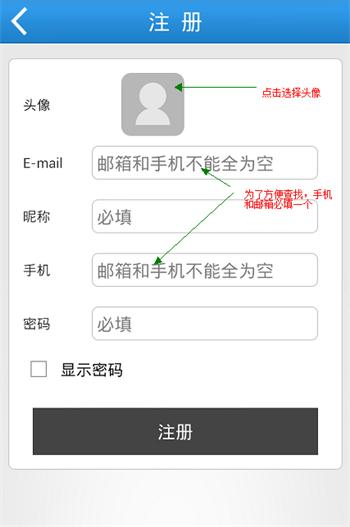头像选择好后会调用剪裁工具对所选头像剪裁

重要提醒:
1.安装少儿版的智能手机和平板电脑是“拉手”默认WIFI和3G/4G网数据络24小时联网，以便少儿版用户的智能设备上传实时位置和足迹数据。为避免产生不必要的3G/4G网络流量费用，家长可以根据实际需要，在“一起来探索”里面设定少儿版用户不连接WIFI和3G/4G网络的时间，并尽量选择使用WIFI连接网络。例如家长在可以确定知道孩子位置时候（在家或者在校）的时间段设置为3G/4G网络不可用时间段。
2.为防止未经家长授权，“拉手”被卸载，从而导致家长无法对智能设备实施管理功能，请家长在完成“拉手”安装之后，在“一起来探索”里面点击防卸载加固并激活。
在主界面点击右上角头像图标，进入登录界面，用户可以通过注册时填写的邮箱号码或者手机号码登录，同时如果用户绑定了新浪账号或者QQ账号，也支持新浪微博账号和QQ账号登录
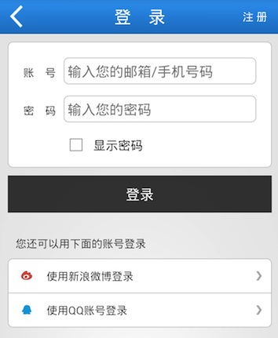在登录界面点击右上角头像图标，进入注册界面，用户可以点击头像从相册中选择一张头像
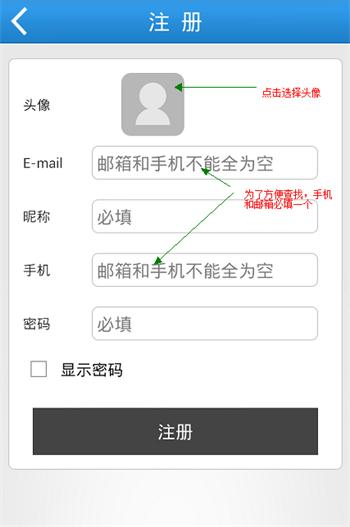头像选择好后会调用剪裁工具对所选头像剪裁
设置WIFI和3G不可用时间段
1.安装了拉手少儿版的用户智能设备，是默认WIFI和3G全天联网，如果用户希望在一天之中的某些时段禁用网络，则需要对相应的网络不可用时段进行设置。
2.如果用户需要WIFI或者3G网络全天不可用，可将相应网络的开始时间设定为00点00分，结束时间设定为23点59分。
3.为了便于查询孩子的实时位置，家长可以根据实际需要，进行组合型的不可用时间段设置。例如将孩子的早上到校时间和晚上离校时间，分别设定为3G网络不可用的开始时间和结束时间。在完成此项设置之后，3G网络将在孩子在校期间关闭，在孩子离校之后自动启动，从而保证可以在孩子离校之后将其实时位置上传供家长查询。
4.在某些情况下，手机会自动连接附近的WIFI网络，例如中国电信的WIFI信号。如果用户无法获取WIFI密码，可能会导致用户既无法使用WIFI，也无法使用3G网络。在此情况下，用户可以在设置里面对WIFI网络设置不可用时间段，在完成设置之后WIFI将停用，3G联网将自动启用。
进入围栏界面，点击右上角图标进入围栏添加界面
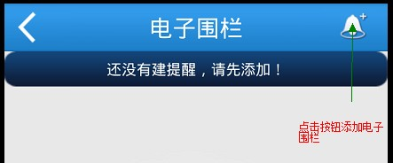在界面中编辑好围栏信息，点击右上角保存按钮即可添加一条新的围栏记录
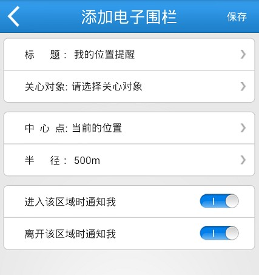进入家人位置可以查看家人的位置信息，点击头像可以查看点击用户最近一次采集到的位置信息
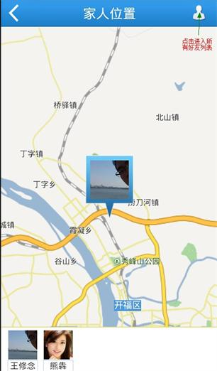点击右上角的按钮，进入家人列表，可以查看所有家人，点击可以进入家人详细界面
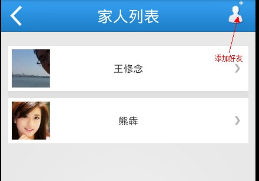在这个界面可以选择对对方公开位置也可以选择不公开。请注意：在查看足迹里， 如果在200米范围内，一直没动。就不显示那个人的最新足迹了。足迹列表看起来好像是没上传，实际已经上传了。
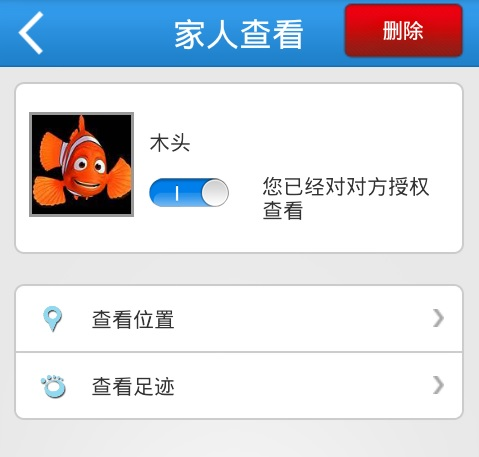点击每个主题下面的单选框可以切换主题，在自定义主题中点击图片可以选择自己相册中的照片作为主题背景
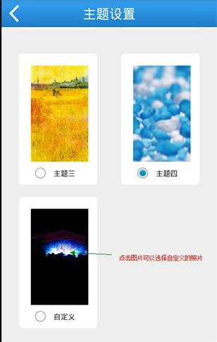在少儿版的客户端可以进入程序锁，进入后点击右上角的锁可以一键锁定所有程序
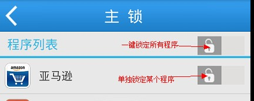单击某个程序，进入详细设置界面，可以选择设置该应用程序的锁定规则，包括可用时间段和定时锁定
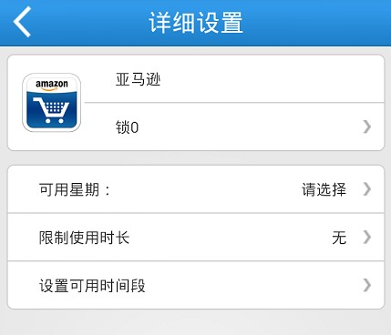拉手支持短信解锁功能，步骤如下：
1.在少儿版设定中选择设定号码
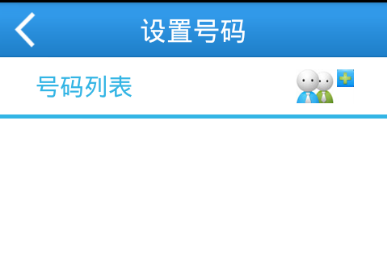2.选择右上角添加号码，添加一个信任的手机号码。少儿版设定到此结束

3.例如下图在少儿版中有一个计算器被加了锁。
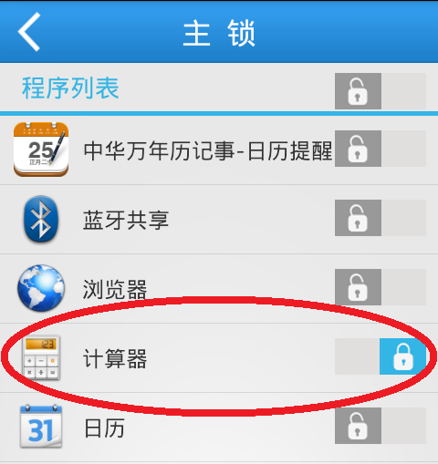4.在被添加了信任的手机号码的那台手机上发送短信解锁格式如下：
unlock计算器
5.如果你想锁计算器，发送短信解锁格式如下：
lock计算器